Reparatón · Taller de electrodomésticos
Guía del reparador
Cómo avanzar del síntoma a la causa en tres fases, qué revisar en el cable, el interruptor y las protecciones térmicas, y con qué herramientas e insumos se trabaja en la Reparatón.
Fases de reparación
Del síntoma visible a la causa oculta, siempre por el camino más seguro.
Inspección general
Análisis visual y antecedentes de uso.
- Entrevista: ¿se cayó?, ¿dejó de funcionar de golpe o perdió potencia de a poco?
- Carcasa: fisuras, deformaciones por calor, botones trabados.
- Cable: desgaste, dobleces y cobre expuesto junto al enchufe y al aliviador de tensión.
- Sentidos: olor a ozono o a plástico quemado, ruidos, marcas de cortocircuito.
Diagnóstico no invasivo
Pruebas externas con el multímetro, desenchufado.
- Aislamiento (fuga a masa): pata del enchufe contra la carcasa metálica → debe marcar OL (∞).
- Bucle principal: entre las patas del enchufe, interruptor encendido → resistencia baja y propia del aparato.
- ∞ en el bucle = cable, interruptor o fusible térmico abierto.
Intervención interna
Desmontaje y revisión guiada, siguiendo el camino de la energía.
- Foto antes de desarmar; tornillos en orden.
- Medir cada componente en el orden en que lo recorre la corriente.
- Reparar, limpiar o reemplazar sólo lo que el diagnóstico indica.
Regla del reparador: la Fase 3 sólo se ejecuta si los hallazgos de las Fases 1 y 2 la justifican técnica y económicamente.
El camino de la energía (Fase 3)
El desmontaje y el diagnóstico interno siguen el flujo lógico de la corriente.
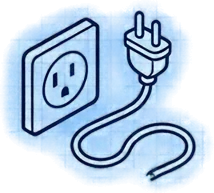
Toma de corrienteEnchufe y cable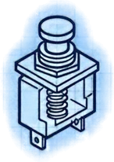
Mando y controlInterruptores mecánicos o electrónicos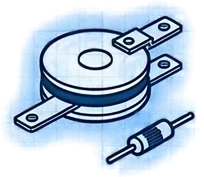
Regulación y seguridadTermostatos y fusibles térmicos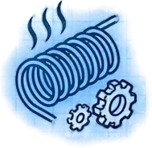
La carga principalResistencias o motores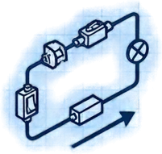
Cierre del circuitoRetorno por el neutroProtocolo de seguridad: 6 pasos
Matriz de diagnóstico progresivo
Evaluación de cables
Aislar el cable de alimentación: la falla más común es la fatiga mecánica en el aliviador de tensión.
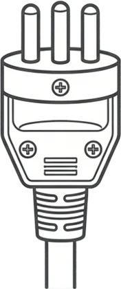
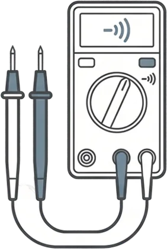
| Sección (mm²) | Equivalente AWG | Uso habitual | Automático máx. | Potencia continua (80 %) |
|---|---|---|---|---|
| 1,5 | 14 | Iluminación | 10–15 A | 2640 W |
| 2,5 | 12 | Enchufes generales | 16–20 A | 3520 W |
| 4,0 | 10 | Cocinas | 30 A | 5280 W |
| 6,0 | 8 | Alimentador principal | 40 A | 7040 W |
Para cables de electrodomésticos se usa cordón flexible de la misma sección que el original (AWG 14/16). Enchufes de reemplazo: 2P 10 A en aparatos de doble aislamiento; 2P+T 10 o 16 A en los que tienen tierra.
Evaluación de interruptores
Pérdida de tensión mecánica o carbón y óxido en los contactos impiden que el circuito se cierre.
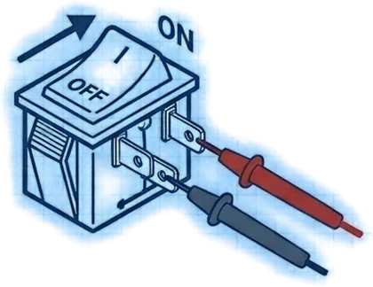
Regulación térmica: termostatos y fusibles térmicos
Criterio de selección cuando hay que reemplazarlos.
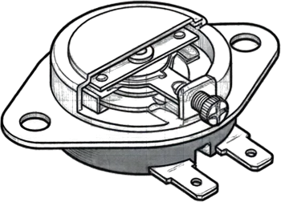
Termostato bimetálico
CÍCLICOFRÍO: 0 ΩDebe tener continuidad a temperatura ambiente y abrirse al llegar a su temperatura de corte; al enfriar vuelve a cerrar. Si los contactos están carbonizados se pueden limpiar.
Reemplazo: misma temperatura; si no hay la exacta, una menor o igual, dentro de un 5 %. Corriente igual o mayor.
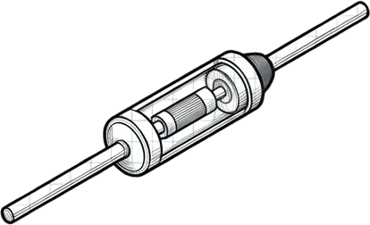
Fusible térmico (termofusible)
UN SOLO USOSANO: 0 ΩSi el multímetro marca resistencia infinita, está fundido. Se abrió por un sobrecalentamiento: hay que buscar la causa (termostato pegado, sarro, ventilación tapada).
Reemplazo: idénticas especificaciones; si no hay la exacta, temperatura ≤ original, dentro de un 5 %, y corriente ≥ original, 250 V.
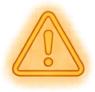
Rango aceptable
Valores típicos para tener en stock
Registro de reemplazos del mesón
Anota aquí qué se reemplazó y con qué criterio. Queda guardado sólo en este dispositivo; descárgalo al final de la jornada.
| Aparato | Componente | Original (°C · A) | Repuesto (°C · A) | Criterio |
|---|
Toolkit básico del reparador
Lo que hay en cada mesón de trabajo.
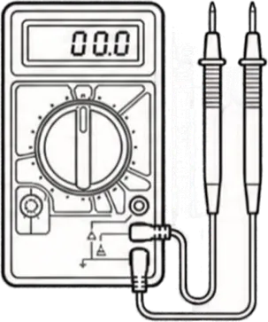
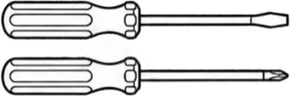
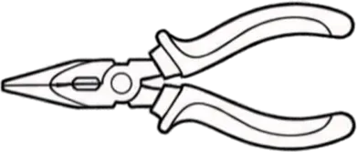
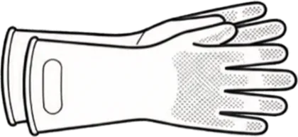
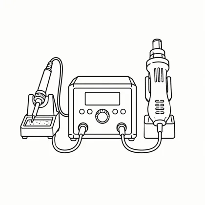
Insumos de reparación
Los maneja el staff en el mesón principal: pídelos ahí.
Consumibles
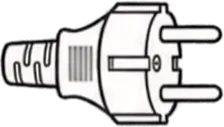
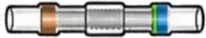
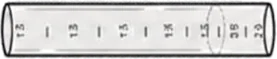
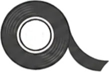
Repuestos de protección
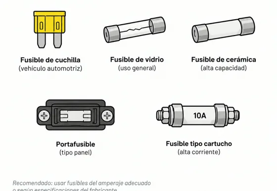
Equipamiento
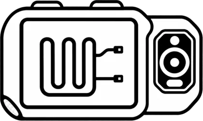
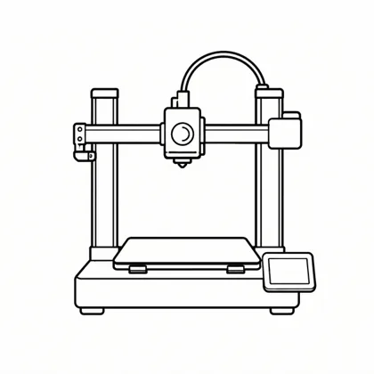